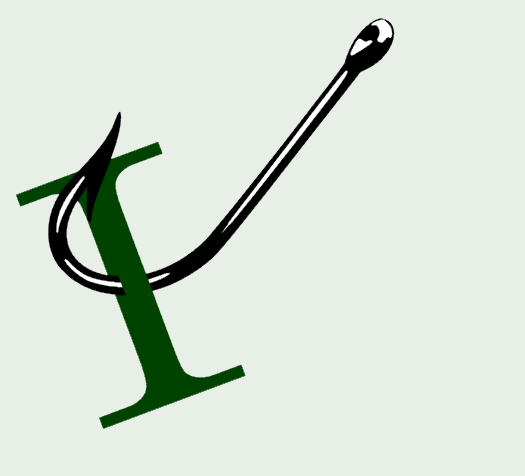

Security
Software Architecture
Inside GitHub's new Git storage architecture by The GitHub Blog
.NET
Outbox Pattern in .NET With Postgres: Concurrent Workers vs the WAL by Milan Jovanović
Tiles and Tokens - Part 2: Discriminated Unions in C# 15: A Turn is Exactly One Thing (video) by NimblePros
Fix package vulnerabilities with GitHub Copilot #visualstudio #githubcopilot (video) by Microsoft Visual Studio
A day in the life building a Critter Stack release w/ AI by Jeremy D. Miller
Modernize your .NET apps for Windows Arm64 with GitHub Copilot by .NET Team
EF Core 11 Part I: Migrations Get Friendlier for Teams by Barret Blake
Sync vs Async File I/O in .NET: Raw Throughput, Scalability, and Buffer Size by Gérald Barré
Tiles and Tokens - Part 1: Rolling Into .NET 11: Modeling a Board Game with C# 15 (video) by NimblePros
Flow-based specifications with Bobcat by Jeremy D. Miller
Delivering Skills in NuGet packages by .NET Team
Migrating to runtime async by Gérald Barré
Understanding Lazy
The Rest of C# 15: The Smaller Features Worth Knowing by Barret Blake
Aspire 2026 Revisit, Episode 1 - Overview (video) by NimblePros
Faster navigation with Code and Feature Search #visualstudio #visualstudiotips (video) by Microsoft Visual Studio
Agile/Work Life
Three Questions for Every User Story by Mike Amundsen
REST/APIs
OpenLint is here to automate your API Style Guides by Alexander Karan
Azure
Azure App Service Community Standup: Platform Release Channels & WebSSH for Custom Containers (video) by Microsoft Azure Developers
Software Development
Hacking a new home screen for my Samsung TV by Cassidy Williams
AI
Julie Downey on Dragon Copilot [EPISODE 922] (video) by Technology and Friends
When Your Copilot Session Follows You Everywhere, So Must Your Governance by Mitchel Sellers
Kevin Griffin on Using AI to Manage a Legacy Code Base [EPISODE 931] (video) by Technology and Friends
Matthew Renze on Best Practices When Working With AI Agents [EPISODE 930] (video) by Technology and Friends
Making the migration affordable by Mark Downie
Is AI the next layer of abstraction? by Mark Seemann
comments powered by Disqus